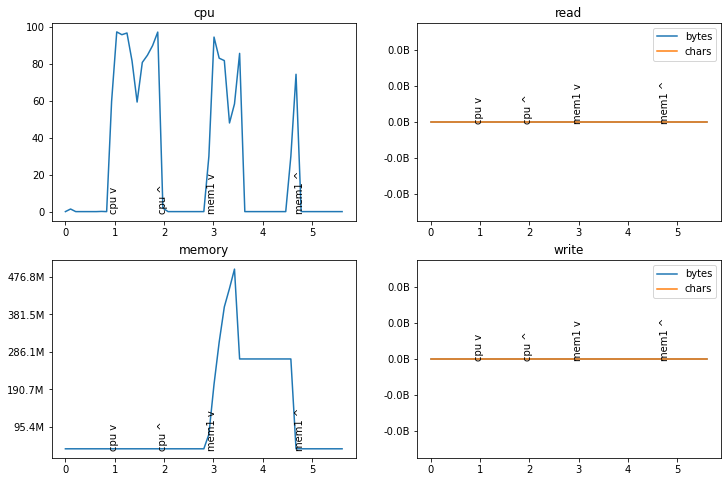

Resource usage monitoring can be done from outside of process - which measures process as a whole, or from inside. Outside is easier, but less precise.
This module provides a resource monitor class that watches a given process from a subprocess. It uses cross-platform psutil package to read process information. I/O stats are not available on MacOS.
Resource usage monitor
ResourceMonitor object starts an external process that logs resource usage. After monitor is stopped, usage log can be reviewed, saved and visualized.
/var/folders/sf/ryhxny2j13j694w2yc_mvn6h0000gn/T/ipykernel_54590/323380559.py:37: UserWarning: Disk I/O stats are not available on MacOS.
warnings.warn('Disk I/O stats are not available on MacOS.')

Decorator for function runtime
Decorator log_start_finish() will print function start and total runtime at function finish, showing function name and argument values.
Example.
def test_log_start_finish():import pandas as pd@log_start_finishdef func(x, d): time.sleep(0.5)return x +1 func(1, d=pd.DataFrame(index=range(1000), columns=range(5)))
test_log_start_finish()
Sat Oct 29 22:27:41 2022: func(1, d=dataframe(1000, 5)) started.
Sat Oct 29 22:27:41 2022: func(1, d=dataframe(1000, 5)) finished in 0.50 seconds.